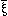
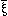
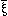

,
, N()].
,
, N()].
This is the general form of proposition.
HOME TOP UP PREV NEXT 0 1 2 3 4 5 GERMAN MAP Tractatus Logico-Philosophicus 6
,
, N()].
This is the general form of proposition.
The propositions of mathematics are equations, and therefore pseudo-propositions.
The riddle does not exist.
If a question can be put at all, then it can also be answered.